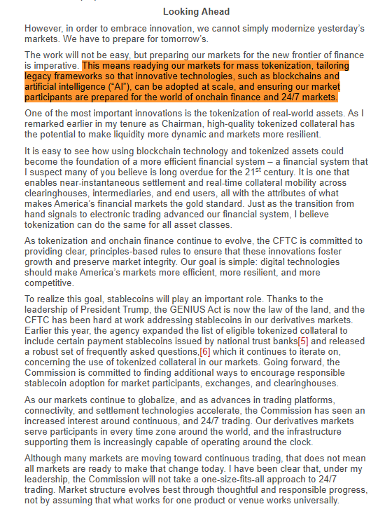
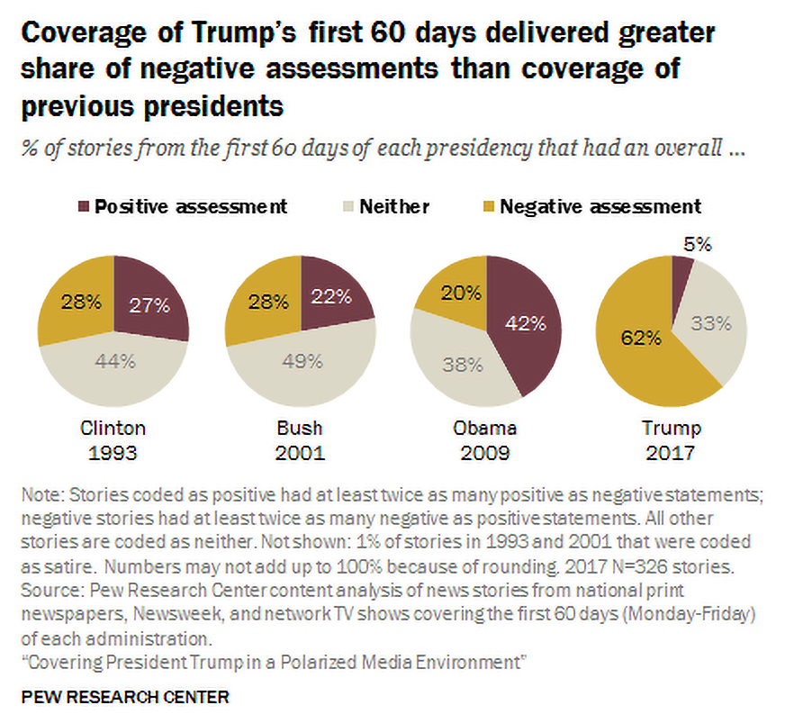

The Freedom 250 Chronicle
U.S. takes permanent control of Greenland’s security
President Donald J. Trump, together with the Prime Ministers of Denmark & Greenland, sign the landmark security agreement granting the U.S. permanent control over Greenland’s security.
CFTC’s Selig: prepare U.S. markets for mass tokenization
🇺🇸 JUST IN: CFTC Chairman Selig says US markets must prepare for "mass tokenization" as blockchains and AI are "adopted at scale."
Selig told the US Treasury Market Conference that "the next decade will likely bring more change to financial markets than the previous several decades combined."
The CFTC expanded eligible collateral to include stablecoins in February and is looking to drive further adoption across exchanges and clearinghouses.

BlackRock: AI adoption will drive digital-asset demand
Our latest research paper explores the growing connection between AI and digital assets and explains why broad AI adoption may drive new demand, utility and applications across the digital asset economy. https://www.blackrock.com/us/individual/literature/whitepaper/the-machine-native-economy.pdf
CFTC: onchain systems, mass tokenization, agentic finance
The new frontier of finance isn't on the horizon. It's here.
As our markets evolve at warp speed, the @CFTC is upgrading its rules and regulations to prepare for the era of onchain systems, mass tokenization, 24/7 trading, and agentic finance.
▶ Watch on XECB: scrap MiCA’s 60% bank-deposit rule for stablecoins
JUST IN: The ECB and European central bank system recommend scrapping MiCA's 60% bank deposit requirement for stablecoin reserves, proposing liquid short-term assets as a safer alternative, per Reuters.

CFTC staff warns on listing ‘mention markets’
Regulatory clarity drives sound markets. Pleased to see staff provide guidance on the potential risks and unique considerations associated with the listing of mention markets on @CFTC regulated exchanges and remind DCMs of their obligation to list only contracts not readily susceptible to manipulation.
Canada’s six largest banks launch tokenized deposits
JUST IN: Canada's six largest banks launch a joint tokenized deposit initiative, starting with interbank transfers of digital commercial deposits before connecting to broader digital asset networks.
Trump: call it Super Intelligence, not Artificial Intelligence
🇺🇸 PRESIDENT TRUMP SAYS HE IS CHANGING THE NAME OF ARTIFICIAL INTELLIGENCE TO SUPER INTELLIGENCE
“From this point forward all of United States documents and hopefully the world will be changed to use the much more accurate term super as opposed to artificial, so it’s super intelligence
In other words welcome to the new world of super intelligence - SI, SI, let’s see if that goes, it sounds much better, it is much better, and it’s much more accurate
Let’s see if I have any power, maybe I do and maybe I don’t, we’re going to find out pretty soon
SUPER INTELLIGENCE”
Trump rejects a UN AI treaty — and the word ‘artificial’
🚨 BREAKING: TRUMP REJECTS UN AI TREATY, OFFICIALLY BANS THE TERM “ARTIFICIAL INTELLIGENCE”
"The United States totally rejects any attempt to construct a globalist schemeto control artificial intelligence."
"The word 'artificial' makes it sound fake. It is not fake... It’s actually amazing..."
"From this point forward, all United States documents will use the term: SUPER INTELLIGENCE"
"Whoever wins Super Intelligence, wins."
▶ Watch on XClaude finds a CRISPR-like enzyme system in bacteriophages
Claude has discovered a previously unknown enzyme system hidden in the DNA of bacteriophages. Beside the enzyme’s gene sits a long array of repeating DNA—a structure that looks somewhat similar to CRISPR.
We don’t yet understand what this system does, but only a handful of known systems share its features, and all of them are able to cut, copy, and paste DNA. Historically, the discovery of such programmable systems has helped revolutionize medicine. CRISPR, for instance, is now the foundation of genetic medicines. But it will take much more work to learn what this system does, and whether it can be put to similar use.
Read more:
Lockheed: hypersonics beyond speed — materials and propulsion
The next frontier of hypersonics goes beyond reaching incredible speeds.
From advanced materials to air-breathing propulsion and scalable manufacturing, we’re solving the challenges of sustained, maneuverable hypersonic flight. Learn more:
Rubio: U.S., Denmark, and Greenland strike an Arctic security deal
President Trump has made the safety of our nation and citizens a priority.
Through his efforts, the United States, Denmark, and Greenland now have an unprecedented deal that strengthens our national security in the Arctic.
At the UN, Trump: peace through strength and sovereignty
Today at the @UN, President Trump made clear that we will lead with peace through strength, champion economic vitality, and defend the sovereignty of nations.
Signed, sealed, delivered: the Greenland security deal
A HISTORIC day for America and national security.
Signed, sealed, and delivered! 🇺🇸🤝🇬🇱🤝🇩🇰
Poland: any permanent U.S. base will be named Fort Trump
JUST IN: Polish President Karol Nawrocki declares any permanent U.S. military base built in Poland will be named “Fort Trump.”
Trump rejects global government, global taxes, and the ICC
#BREAKING: Trump rejects global government, global taxes, and the ICC.
Vance: Politico isn’t banned — it lost its White House office
.@VP: "I've heard a lot of people say that we've 'banned Politico.' Politico will still write their crazy articles; they will still misrepresent what we say and do. What's different is that they don't have an office in the White House anymore... It's not a ban. It's the refusal to grant special access to people who are engaged in dishonest reporting."
Trump: they said they’d boycott me. They never do.
.@POTUS on the Fake News: "It's interesting because they said they were going to be boycott me — but they never boycott me, so I wasn't very worried about that. Look at all that press!" 🤣
▶ Watch on XFlashback: Fake News negativity in Trump’s first term
Flashback to President Trump's first term — when the Fake News set a new standard for negativity (and it has only gotten worse)

Paramount wins Warner Bros. — CNN gets a new owner
It’s official: Paramount wins and will acquire all of Warner Bros. The 12 Democrat attorney generals essentially folded. CNN will have a new, much saner owner. Huge media loss for Democrats. Now they just have MSNBC.
Trump hits 750 media events in the second term
Trump the Transparent: President Surpasses 750 Media Events in Second Term, Maintaining Unprecedented Press Pace
Trump: we’ll drop Rubio in Cuba on the way back from Iran
Trump: I don't know what's going on with Cuba, but they're not looking so good. Marco's parents were born in Cuba. I think he has figured it out, so we're going to someday in the near future, drop him off in the middle of Cuba on the way back from Iran.
Trump: fly Marco into Cuba, drop him off, he’ll figure it out
Trump: “Someday in the near future, we’re going to drop Marco off in the middle of Cuba. Fly him in, drop him off, and he’ll figure out the rest.” 😂
▶ Watch on XTrump: freedom is coming to Cuba very soon
BREAKING: Trump declares "freedom will be coming to Cuba" very soon.
Bessent and He Lifeng talk before Trump meets Xi
Today in Washington, Vice Premier He Lifeng and I held substantive discussions on the U.S.-China economic relationship ahead of President Trump’s meeting with President Xi. Our discussions continued to focus on securing meaningful commitments that protect American workers, farmers, and businesses while advancing U.S. economic and national security interests.
U.S. and China extend the trade deal to January 10, 2027
BREAKING: The US and China have agreed to extend their trade deal until January 10th, 2027.
“I don’t know whether a bigger deal can be done. I don’t know whether we will just roll the current deal,” US Treasury Secretary Bessent said.
Macron: France will help protect navigation in Hormuz
JUST IN: 🇫🇷 President Macron says France is ready to participate in an international operation to protect navigation in the Strait of Hormuz.
Trump at the UN: a world free of Iranian terror
"If we stand united, we will soon see a world free at last from the 51-year menace of Iranian terror, & oil prices will come plummeting down even lower than they were at the start of the conflict. With courage & resolve, anything is possible."
- President Trump at the @UN.
Oz: 1.1 million Obamacare enrollments with no SSN and no ID
WOAH 🚨 Dr. Oz just announced that in just one year under the Biden Admin, 1.1 million people enrolled into Obamacare with NO SOCIAL SECURITY NUMBER and NO ID, they were all enrolled into full benefits
During this one year, 100% OF PEOPLE ENROLLED HAD NO SOCIAL SECURITY NUMBER
Labor IG: colleges exploiting J-1 visas — expect cuffs
Colleges exploiting J-1 visas: @DOLOIG is following the sponsors, the grant money and the people behind the scheme.
Fraudsters should expect cuffs.
Stay tuned, America.
We goin back to school. 🇺🇸
VP task force to pull 760,000 fraudulent Obamacare enrollments
.@VP-Led Task Force Set to Remove 760,000 Allegedly Fraudulent Obamacare Enrollments
Hegseth announces the Joint Warfighter Evaluation
Today, I am announcing the Joint Warfighter Evaluation.
Rand Paul: HSGAC votes on immunity for Fauci’s former assistant
Mark your calendars: Anthony Fauci may have pled the Fifth, but the investigation is still ongoing. At 10am tomorrow, the HSGAC will vote on granting immunity to his longtime former assistant at the NIAID. If two-thirds of the committee agrees, we will receive the former assistant's testimony and the answers the American people deserve.
UCSF med school: 4.6× Hispanic, 12.6× Black vs. white, same credentials
UCSF Med School is 4.6x more likely to admit Hispanic applicants & 12.6x more likely to admit black applicants, than white applicants w/ the SAME academic & socioeconomic backgrounds. Race has no place in admissions & @CivilRights Division will end these illegal practices!
Harris: Republicans are ‘cheating’ by removing ineligible voters
Kamala Harris says Republicans are cheating by removing ineligible voters from the rolls.
DOJ: aggressive actions to secure the midterms
Trump DOJ says it will take aggressive actions to secure midterm elections.
NYC investigating after people climbed out of the sewers
🚨 #BREAKING: NYC officials investigating the sewer system after multiple people were spotted climbing out of the sewers this morning before "heading north"
Americans now have more wealth in stocks than in homes
BREAKING: Americans now have “significantly more wealth in stocks than in their homes.”